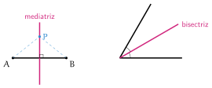

Apartado 10.1
Lugares geométricos

Rectas y puntos notables del triángulo
10.1.1
Resuelve: Tres pueblos quieren construir un depósito de agua que esté a la misma distancia de los tres. ¿Qué punto notable del triángulo que forman deben buscar? ¿Cómo se construye?